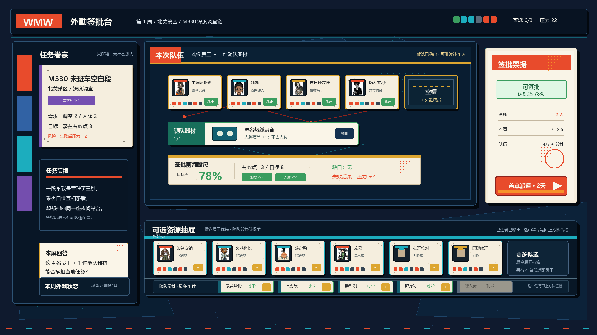
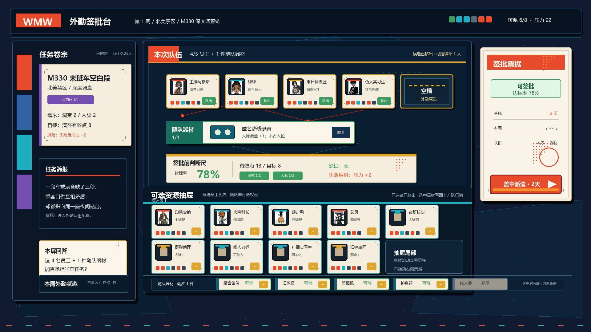
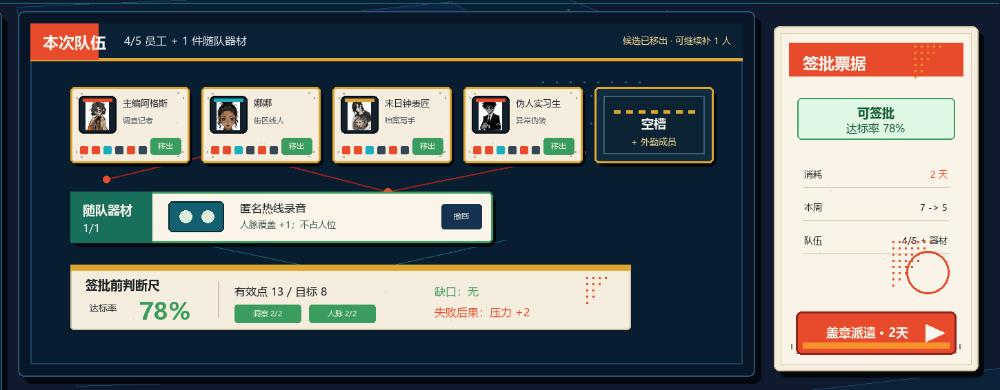
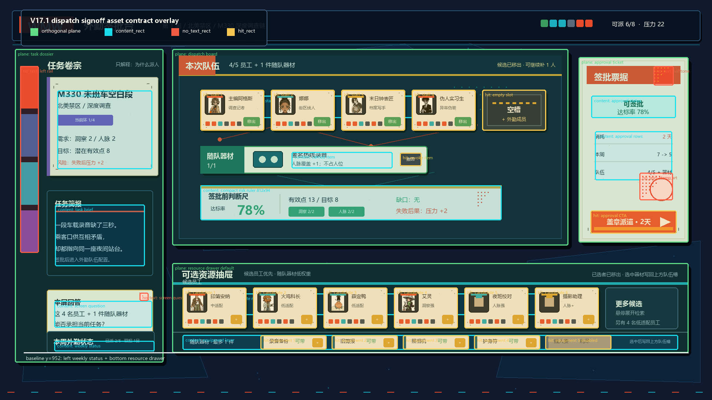

派遣签批台 V17.1 · 正交真实内容方向稿与布局合同
本页是 filled-state text mock / 真实内容风格稿候选与 V17.1 asset contract overlay，用于判断结构、视觉方向、信息层级和 rect 合同；不是 no-text 生产母版，也不是生产真源。

01 默认态：4/5 队伍空槽、1 件随队器材、判断尺和右侧签批票据。

02 候选抽屉 hover：展开第二行，不推动右侧签批票据。

03 中央队伍与右票据 100% 局部裁切，用于检查安全区和文本贴边。

04 V17.1 合同批注：绿色为正交功能面，青色为动态内容区，红色为禁写装饰，黄色为点击区。